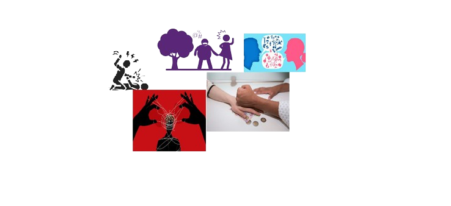
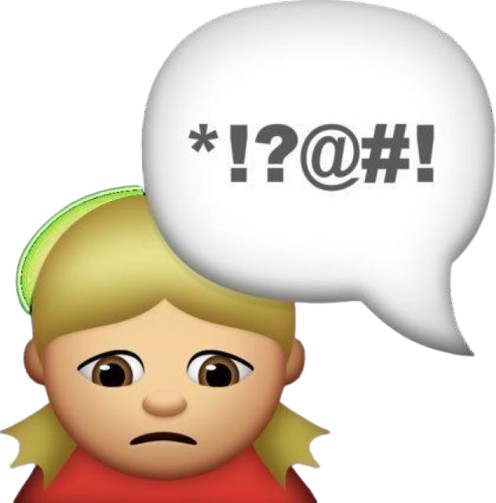

La violencia es el uso intencional de la fuerza o el abuso de poder para dominar a alguien o imponer algo. Se puede manifestar a través de comportamientos que involucran:
La fuerza física, para lastimar, dañar o matar a alguien
Las acciones verbales y gestuales, para rebajar o descalificar la idea o postura de alguien
La inacción y el silencio, para despreciar a alguien.
Tipos de Violencia
Violencia fisica
Es la forma más evidente de violencia o abuso, que puede ocasionar daños físicos y riesgo de vida, aunque no siempre deja huellas visibles (por ejemplo, si te tiran del pelo o te arrojan la comida en la cara, eso es un acto de violencia física). Se manifiesta de varios modos como castigos corporales, permanencia forzada en lugares encerrados, inmovilización, etc.
Violencia psicologica
Es una de las formas de violencia más difíciles de detectar, que puede ocasionar daños a nivel psicológico o emocional. Se manifiesta cuando una o más personas agreden de manera verbal e intencional a otra persona. A veces la agresión no es directa y evidente, sino que comienza como algo sutil y se prolonga a lo largo del tiempo hasta que resulta una fuerte agresión psicológica.
Violencia Sexual
Es una de las formas de violencia donde la mayoría de las víctimas son mujeres y los agresores son hombres. Abarca desde comentarios e insinuaciones no deseados hasta las acciones del acto sexual. Se manifiesta con actos agresivos mediante el uso de la fuerza física, psíquica o moral que reducen a la víctima a condiciones de inferioridad para llevar a cabo una conducta sexual contra su voluntad.
Violencia economica y patrimonial
Es una de las formas de violencia que afecta los bienes de la propia víctima y, sostenida en el tiempo, deriva en otros tipos de violencia como la física o la sexual. Se manifiesta con la transformación, sustracción, destrucción o restricción de los objetos, documentos, bienes y valores de la víctima, impidiendo que trabaje o realice actividades de manera independiente a fin de controlar y amenazar su integridad.
Violencia simbolica
s una de las formas de violencia más disimulada que afecta a una gran cantidad de personas en simultáneo. Se manifiesta de manera indirecta en la sociedad, a través de estrategias que imponen estereotipos y estructuras mentales, que son reforzados por la repetición y terminan siendo naturalizarlos. Por ejemplo, el parámetro adoptado socialmente de delgadez y cuerpo perfecto casi irreal conlleva a severos trastornos psicológicos y físicos entre la mayoría de la población que no puede alcanzar esa apariencia.

Modalidades de Violencia
Domestica o familiar
Institucional
Laboral
Contra la libertad reproductiva
Mediatica
Causas de la Violencia

La violencia de cualquier tipo puede ocurrir por diversas causas, entre las principales se destacan:
El alcholismo
Institucional
Como prevenir la Violencia
La agresividad y la violencia son conceptos diferentes, aunque se suelen emplear como sinónimos. La agresividad es un rasgo biológico del ser humano, natural por su esencia animal y que emplea como método de supervivencia.
La violencia es producto de la evolución cultural, donde se moldea al individuo desde el aprendizaje y desde los hábitos violentos. No es una enfermedad. Por lo tanto, para revertirla o solucionarla es necesario un cambio cultural y educativo.
Esta prevención se puede llevar a cabo, por ejemplo, con acciones por parte del Estado (políticas sociales y económicas, de la salud y de contención), con una educación que aplique programas escolares de prevención que garanticen el respeto y la igualdad, entre otros.